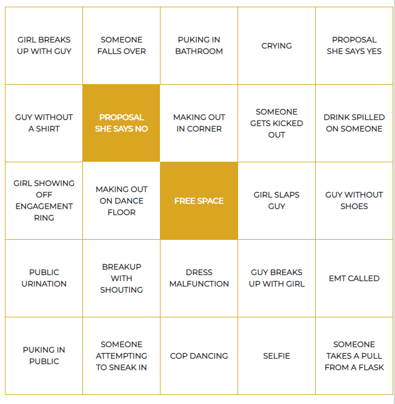

Breakup Ball Bingo is a scavenger hunt-style game of bingo where each user can fill out a bingo board in real-time on our GitHub Pages website upon witnessing the events listed on the bingo board at "Breakup Ball". If the player witnesses one of the 24 events listed on the bingo board, he/she/they can mark that event off by clicking on the cell that contains that event. Please see example Breakup Ball Bingo board below.

A Firebase database is linked to the application to keep track of each player's bingo board and interesting stories that are witnessed at "Breakup Ball."
To use our version of Breakup Ball Bingo, just visit our website.
However, because the game is open-source, you can create your own version of Breakup Ball Bingo by forking the GitHub repository that houses the application's code. After forking the repository, you can edit the bingo board to add your own events by modifying the lines of code in bingo.html that have TODO comments. Note: You can edit the code in your preferred text editor or IDE. You do not need to download or install any addtional packages to run the code, as the codebase consists of JavaScript, HTML, and CSS. Next, add Firebase to your application, and edit the lines of code in bingo.html below the comment "TODO: Initialize Firebase" with the data pertaining to your Firebase instance. Finally, to host your own GitHub Pages website with the bingo application, navigate to the repository on GitHub and click on the project's settings. Scroll down on the Settings page until you see the GitHub Pages header. From here, select the Source to be "master branch". Your personalized instance of Breakup Ball Bingo should now be published at the URL given to you by GitHub.
If you would like to implement a new feature to the game or would like to improve some of the game's functionality, clone the repository, make a new branch, develop the new feature(s) or make modifications to the code on that branch, and then open a pull request to the master branch of the repository.
Note: You can edit the code in your preferred text editor or IDE. You do not need to download or install any addtional packages to run the code, as the codebase consists of JavaScript, HTML, and CSS.